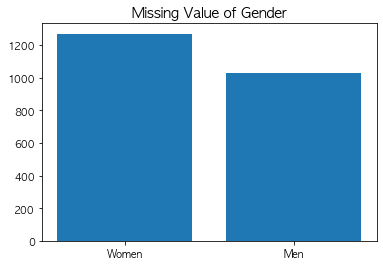
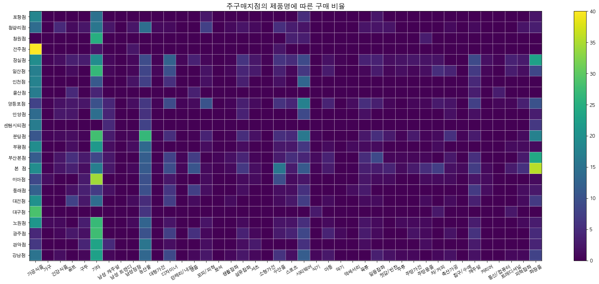

작업형 제 2 유형 예시문제¶
#그래프 한글띄우기
import pandas as pd
import matplotlib.pyplot as plt
import platform
if platform.system() == 'Darwin':
plt.rc('font', family='AppleGothic')
elif platform.system() == 'Windows':
plt.rc('font', family='Malgun Gothic')
elif platform.system() == 'Linux':
plt.rc('font', family='Malgun Gothic')
plt.rcParams['axes.unicode_minus'] = False
y_train = pd.read_csv('https://raw.githubusercontent.com/Datamanim/dataq/main/y_train.csv')
X_train = pd.read_csv('https://raw.githubusercontent.com/Datamanim/dataq/main/X_train.csv',encoding='euc-kr')
test = pd.read_csv('https://raw.githubusercontent.com/Datamanim/dataq/main/X_test.csv',encoding='euc-kr')
데이터 전처리 및 EDA¶
Question 1
y_train,X_train데이터를 합쳐 trainDf 변수에 저장하라
trainDf = pd.merge(y_train,X_train)
trainDf.head(3)
| cust_id | gender | 총구매액 | 최대구매액 | 환불금액 | 주구매상품 | 주구매지점 | 내점일수 | 내점당구매건수 | 주말방문비율 | 구매주기 | |
|---|---|---|---|---|---|---|---|---|---|---|---|
| 0 | 0 | 0 | 68282840 | 11264000 | 6860000.0 | 기타 | 강남점 | 19 | 3.894737 | 0.527027 | 17 |
| 1 | 1 | 0 | 2136000 | 2136000 | 300000.0 | 스포츠 | 잠실점 | 2 | 1.500000 | 0.000000 | 1 |
| 2 | 2 | 1 | 3197000 | 1639000 | NaN | 남성 캐주얼 | 관악점 | 2 | 2.000000 | 0.000000 | 1 |
Question 2
trainDf와 X_test의 결측치가 있는 컬럼의 숫자 및 결측치 숫자를 파악하고 결측치처리 방식에 대해 생각해보자
trainNAN = trainDf.isnull().sum()
trainNAN
cust_id 0
gender 0
총구매액 0
최대구매액 0
환불금액 2295
주구매상품 0
주구매지점 0
내점일수 0
내점당구매건수 0
주말방문비율 0
구매주기 0
dtype: int64
testNAN = X_test.isnull().sum()
testNAN
cust_id 0
총구매액 0
최대구매액 0
환불금액 1611
주구매상품 0
주구매지점 0
내점일수 0
내점당구매건수 0
주말방문비율 0
구매주기 0
dtype: int64
isnullGender = trainDf[trainDf['환불금액'].isnull()].gender.value_counts()
plt.bar(isnullGender.index,isnullGender.values)
plt.xticks([0,1],['Women','Men'])
plt.title("Missing Value of Gender",fontsize=14)
plt.show()

trainDf['환불금액'].describe()
count 1.205000e+03
mean 2.407822e+07
std 4.746453e+07
min 5.600000e+03
25% 2.259000e+06
50% 7.392000e+06
75% 2.412000e+07
max 5.637530e+08
Name: 환불금액, dtype: float64
환블금액의 경우 최솟값이 0이 아니기에, Nan은 결측치가 아닌 환불을 하지않은 경우(0원)로 판단 할수 있다. nan은 0으로 채운다
trainDf['환불금액'] =trainDf['환불금액'].fillna(0)
test['환불금액'] = test['환불금액'].fillna(0)
trainDf.head(3)
| cust_id | gender | 총구매액 | 최대구매액 | 환불금액 | 주구매상품 | 주구매지점 | 내점일수 | 내점당구매건수 | 주말방문비율 | 구매주기 | |
|---|---|---|---|---|---|---|---|---|---|---|---|
| 0 | 0 | 0 | 68282840 | 11264000 | 6860000.0 | 기타 | 강남점 | 19 | 3.894737 | 0.527027 | 17 |
| 1 | 1 | 0 | 2136000 | 2136000 | 300000.0 | 스포츠 | 잠실점 | 2 | 1.500000 | 0.000000 | 1 |
| 2 | 2 | 1 | 3197000 | 1639000 | 0.0 | 남성 캐주얼 | 관악점 | 2 | 2.000000 | 0.000000 | 1 |
Question 3
범주형 변수의 유일값과 유일값의 갯수를 파악하라
main_index = trainDf['주구매상품'].value_counts().index
print('주구매상품 유일값 수 ',len(main_index))
print('주구매상품 유일값 리스트 ',list(main_index))
주구매상품 유일값 수 42
주구매상품 유일값 리스트 ['기타', '가공식품', '농산물', '화장품', '시티웨어', '디자이너', '수산품', '캐주얼', '명품', '섬유잡화', '골프', '스포츠', '일용잡화', '육류', '모피/피혁', '남성 캐주얼', '구두', '건강식품', '차/커피', '아동', '피혁잡화', '축산가공', '주방용품', '셔츠', '젓갈/반찬', '주방가전', '트래디셔널', '남성정장', '생활잡화', '주류', '가구', '커리어', '란제리/내의', '대형가전', '식기', '액세서리', '침구/수예', '보석', '통신/컴퓨터', '남성 트랜디', '소형가전', '악기']
main_center = trainDf['주구매지점'].value_counts().index
print('주구매지점 유일값 수 ',len(main_center))
print('주구매지점 유일값 리스트 ',list(main_center))
주구매지점 유일값 수 24
주구매지점 유일값 리스트 ['본 점', '잠실점', '분당점', '부산본점', '영등포점', '일산점', '강남점', '광주점', '노원점', '청량리점', '대전점', '미아점', '부평점', '동래점', '관악점', '인천점', '안양점', '포항점', '대구점', '울산점', '센텀시티점', '전주점', '창원점', '상인점']
trainDf.head(3)
| cust_id | gender | 총구매액 | 최대구매액 | 환불금액 | 주구매상품 | 주구매지점 | 내점일수 | 내점당구매건수 | 주말방문비율 | 구매주기 | |
|---|---|---|---|---|---|---|---|---|---|---|---|
| 0 | 0 | 0 | 68282840 | 11264000 | 6860000.0 | 기타 | 강남점 | 19 | 3.894737 | 0.527027 | 17 |
| 1 | 1 | 0 | 2136000 | 2136000 | 300000.0 | 스포츠 | 잠실점 | 2 | 1.500000 | 0.000000 | 1 |
| 2 | 2 | 1 | 3197000 | 1639000 | 0.0 | 남성 캐주얼 | 관악점 | 2 | 2.000000 | 0.000000 | 1 |
Question 4
연속형 변수들의 성별에 따른 분포차이를 시각화해라
t= trainDf.copy()
import numpy as np
numeric = t.select_dtypes(include=np.number).columns[2:]
for v in numeric:
df = t[[v,'gender']]
male = df[df.gender==1]
female = df[df.gender==0]
fig, axes = plt.subplots(1,2,figsize=(15,5))
print(v)
axes[0].hist(male[v],alpha=0.3,color='blue',label='male',bins=40)
axes[0].hist(female[v],alpha=0.3,color='red',label='female',bins=40)
axes[0].legend()
axes[1].boxplot(female[v],positions=[0],widths=0.5)
axes[1].boxplot(male[v],positions=[1],widths=0.5)
axes[1].set_xticklabels(['women','men'])
plt.show()
총구매액
최대구매액
환불금액
내점일수
내점당구매건수
주말방문비율
구매주기
Question 5
주 구매지점에 따른 데이터를을 재구성하고 분석하라
t.groupby('주구매지점').agg(['mean','count'])['총구매액'].sort_values('count',ascending=False).head(3)
| mean | count | |
|---|---|---|
| 주구매지점 | ||
| 본 점 | 1.023784e+08 | 1077 |
| 잠실점 | 8.377841e+07 | 474 |
| 분당점 | 7.318428e+07 | 436 |
pv_t = t.groupby(['주구매지점','주구매상품']).count()['cust_id'].reset_index().rename(columns={'cust_id':'counts'})
pv_t.head(3)
| 주구매지점 | 주구매상품 | counts | |
|---|---|---|---|
| 0 | 강남점 | 가공식품 | 22 |
| 1 | 강남점 | 건강식품 | 2 |
| 2 | 강남점 | 구두 | 1 |
pv_data =pv_t.pivot(index='주구매지점',columns='주구매상품',values='counts').fillna(0)
# pv_data = pv_data/pv_data.sum(axis=1)
for v in pv_data.columns:
pv_data[v] = pv_data[v]/pv_data.sum(axis=1) *100
pv_data.head(3)
| 주구매상품 | 가공식품 | 가구 | 건강식품 | 골프 | 구두 | 기타 | 남성 캐주얼 | 남성 트랜디 | 남성정장 | 농산물 | ... | 주방용품 | 차/커피 | 축산가공 | 침구/수예 | 캐주얼 | 커리어 | 통신/컴퓨터 | 트래디셔널 | 피혁잡화 | 화장품 |
|---|---|---|---|---|---|---|---|---|---|---|---|---|---|---|---|---|---|---|---|---|---|
| 주구매지점 | |||||||||||||||||||||
| 강남점 | 15.172414 | 0.0 | 1.447467 | 0.000000 | 0.726639 | 22.570648 | 0.775692 | 0.0 | 0.0 | 13.209746 | ... | 0.000000 | 0.865519 | 1.733055 | 0.0 | 1.737074 | 0.0 | 0.0 | 0.870525 | 0.871507 | 7.852356 |
| 관악점 | 6.521739 | 0.0 | 0.000000 | 0.000000 | 4.038630 | 23.273689 | 4.774481 | 0.0 | 0.0 | 15.477830 | ... | 1.350510 | 0.000000 | 0.000000 | 0.0 | 2.688295 | 0.0 | 0.0 | 0.000000 | 0.000000 | 3.995478 |
| 광주점 | 4.385965 | 0.0 | 0.881943 | 2.648588 | 1.771220 | 27.509653 | 0.000000 | 0.0 | 0.0 | 10.073503 | ... | 0.949979 | 0.000000 | 1.900861 | 0.0 | 5.707962 | 0.0 | 0.0 | 0.000000 | 0.000000 | 4.769887 |
3 rows × 42 columns
상인점의 경우 1가지 구매 케이스밖에 없기 때문에 제외
pv_data= pv_data.loc[pv_data.index !='상인점']
plt.figure(figsize=(25,10))
plt.title('지점별 품목 카테고리 구매 건수',fontsize=1)
plt.pcolor(pv_data,edgecolor='white')
plt.colorbar()
plt.xticks(np.arange(pv_data.shape[1])+0.5,pv_data.columns,rotation=30)
plt.yticks(np.arange(pv_data.shape[0])+0.5,pv_data.index)
plt.title('주구매지점의 제품명에 따른 구매 비율',fontsize=15)
plt.show()

center_gender = t.groupby(['주구매지점','gender']).count()['cust_id'].reset_index().pivot(index='주구매지점',columns='gender',values='cust_id').fillna(0)
center_gender['total'] =center_gender[0] +center_gender[1]
center_gender['ratio'] =center_gender[1] /center_gender['total'] *100
t.groupby('주구매지점').mean()['총구매액'].to_frame().sort_values('총구매액').head(3)
| 총구매액 | |
|---|---|
| 주구매지점 | |
| 센텀시티점 | 1.098891e+07 |
| 전주점 | 3.200927e+07 |
| 안양점 | 6.055826e+07 |
Question 5
데이터 정규화 및 one-hot-encoding ,홀드아웃기법, smote방식의 오버샘플링과 랜덤포레스트 모델 학습 및 테스트셋 auc값추출
from sklearn.model_selection import train_test_split
x = trainDf.drop(['cust_id','gender','방문당평균구매금액'],axis=1)
y = trainDf.gender
#label 인코딩
# from sklearn.preprocessing import LabelEncoder
# le = LabelEncoder()
# x_label = x.copy()
# for v in ['주구매상품','주구매지점']:
# x_label[v] = le.fit_transform(x_label[v])
x_dum = pd.get_dummies(x)
feature_name_lst= x_dum.columns
test_dum = pd.get_dummies(test)
missing_cols = set( x_dum.columns ) - set( test_dum.columns )
for c in missing_cols:
test_dum[c] = 0
test_dum = test_dum[x_dum.columns]
from sklearn.preprocessing import StandardScaler
sc = StandardScaler()
sc.fit(x_dum)
x_dum = sc.transform(x_dum)
test_dum = sc.transform(test_dum)
X_train, X_test, y_train, y_test = train_test_split(x_dum, y, test_size=0.3, random_state=60,stratify=y)
from imblearn.over_sampling import SMOTE
smote = SMOTE(random_state=0)
#X_train_over,y_train_over = smote.fit_sample(X_train,y_train)
X_train_over,y_train_over = smote.fit_resample(X_train,y_train)
from sklearn.ensemble import RandomForestClassifier
clf = RandomForestClassifier(max_depth=2, random_state=0)
clf.fit(X_train_over, y_train_over)
RandomForestClassifier(max_depth=2, random_state=0)
from sklearn.metrics import classification_report
y_pred = clf.predict(X_test)
report =classification_report(y_test, y_pred, target_names=['class 0', 'class 1'])
print(report)
precision recall f1-score support
class 0 0.74 0.55 0.63 655
class 1 0.48 0.68 0.56 395
accuracy 0.60 1050
macro avg 0.61 0.61 0.60 1050
weighted avg 0.64 0.60 0.60 1050
from sklearn.metrics import roc_auc_score ,roc_curve
lr_probs = clf.predict_proba(X_test)
lr_auc = roc_auc_score(y_test, lr_probs[:,1])
lr_auc
0.656857667407479
Question 6
k-fold방식의 여러 분류기 모델 (코드 참고 링크: https://www.kaggle.com/yassineghouzam/titanic-top-4-with-ensemble-modeling)
from collections import Counter
from sklearn.ensemble import RandomForestClassifier, AdaBoostClassifier, GradientBoostingClassifier, ExtraTreesClassifier, VotingClassifier
from sklearn.discriminant_analysis import LinearDiscriminantAnalysis
from sklearn.linear_model import LogisticRegression
from sklearn.neighbors import KNeighborsClassifier
from sklearn.tree import DecisionTreeClassifier
from sklearn.neural_network import MLPClassifier
from sklearn.svm import SVC
from sklearn.model_selection import GridSearchCV, cross_val_score, StratifiedKFold, learning_curve
import seaborn as sns
kfold = StratifiedKFold(n_splits=10)
random_state = 2
classifiers = []
classifiers.append(SVC(random_state=random_state))
classifiers.append(DecisionTreeClassifier(random_state=random_state))
classifiers.append(AdaBoostClassifier(DecisionTreeClassifier(random_state=random_state),random_state=random_state,learning_rate=0.1))
classifiers.append(RandomForestClassifier(random_state=random_state))
classifiers.append(ExtraTreesClassifier(random_state=random_state))
classifiers.append(GradientBoostingClassifier(random_state=random_state))
classifiers.append(MLPClassifier(random_state=random_state))
classifiers.append(KNeighborsClassifier())
cv_results = []
for classifier in classifiers :
cv_results.append(cross_val_score(classifier, x_dum, y = y, scoring = "roc_auc", cv = kfold, n_jobs=4))
cv_means = []
cv_std = []
for cv_result in cv_results:
cv_means.append(cv_result.mean())
cv_std.append(cv_result.std())
cv_res = pd.DataFrame({"CrossValMeans":cv_means,"CrossValerrors": cv_std,"Algorithm":["SVC","DecisionTree","AdaBoost",
"RandomForest","ExtraTrees","GradientBoosting","MultipleLayerPerceptron","KNeighboors",]})
cv_res[['CrossValMeans','Algorithm']]
| CrossValMeans | Algorithm | |
|---|---|---|
| 0 | 0.634343 | SVC |
| 1 | 0.538585 | DecisionTree |
| 2 | 0.579555 | AdaBoost |
| 3 | 0.647333 | RandomForest |
| 4 | 0.613898 | ExtraTrees |
| 5 | 0.663534 | GradientBoosting |
| 6 | 0.605172 | MultipleLayerPerceptron |
| 7 | 0.589237 | KNeighboors |
Question 6
상위성능을 보인 2개 모델의 하이퍼 파라미터 튜닝 후 vote 앙상블
# Gradient boosting tunning
GBC = GradientBoostingClassifier()
gb_param_grid = {'loss' : ["deviance"],
'n_estimators' : [100,200,300],
'learning_rate': [0.1, 0.05, 0.01],
'max_depth': [4, 8],
'min_samples_leaf': [100,150],
'max_features': [0.3, 0.1]
}
gsGBC = GridSearchCV(GBC,param_grid = gb_param_grid, cv=kfold, scoring="accuracy", n_jobs= 4, verbose = 1)
gsGBC.fit(x_dum,y)
GBC_best = gsGBC.best_estimator_
gsGBC.best_score_
Fitting 10 folds for each of 72 candidates, totalling 720 fits
0.6588571428571429
# RFC Parameters tunning
RFC = RandomForestClassifier()
## Search grid for optimal parameters
rf_param_grid = {"max_depth": [None],
"max_features": [1, 3, 10],
"min_samples_split": [2, 3, 10],
"min_samples_leaf": [1, 3, 10],
"bootstrap": [False],
"n_estimators" :[100,300],
"criterion": ["gini"]}
gsRFC = GridSearchCV(RFC,param_grid = rf_param_grid, cv=kfold, scoring="accuracy", n_jobs= 4, verbose = 1)
gsRFC.fit(x_dum,y)
RFC_best = gsRFC.best_estimator_
gsRFC.best_score_
Fitting 10 folds for each of 54 candidates, totalling 540 fits
0.6634285714285715
votingC = VotingClassifier(estimators=[('rfc', RFC_best),('gbc',GBC_best)], voting='soft', n_jobs=4)
votingC = votingC.fit(x_dum,y)
test_gender = pd.Series(votingC.predict_proba(test_dum)[:,1], name="gender")
results= pd.concat([test.cust_id,test_gender],axis=1)
results.head(3)
| cust_id | gender | |
|---|---|---|
| 0 | 3500 | 0.421227 |
| 1 | 3501 | 0.219772 |
| 2 | 3502 | 0.163396 |
results.to_csv("ensemble_voting.csv",index=False)